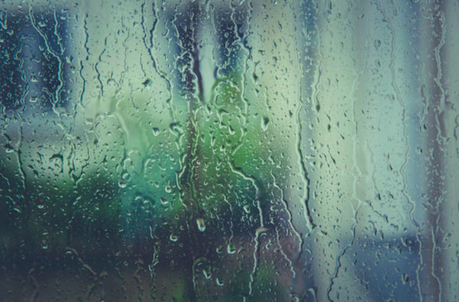

| REFLECTIONS | |
| Read this if the Universe is against you: The blessing of bad luck by Rhu Jing Lor'23 | |
| A refreshing acknowledgement of the known amidst the vast unknown, and why time is begging us to believe in ourselves.
|
|
|  | Rhu Jing Lor '23 |
|
Whenever I feel like the world is out to get me, I recall how my father used to comfort me. He would tell me the Chinese folk tale of Sai Weng and his lost horse; a story that illustrates how misfortunes that fall upon us could end up being “a blessing in disguise”. It goes like this" “Sai Weng was a man of noble intentions who lived in ancient China. He held two things close to his heart: the rare breeds of horses he collected and his son.One day, he found that one of his horses escaped and ran away from the stable. However, the old man was not upset despite losing his horse. As his neighbours came to console him, he explained that losing the animal was just part of life and he would not fret over it since it was something that is not irreversible. A few days later, to his surprise, not only did his old horse return, but it also brought along a rare powerful mare. However, Sai Weng was not overly jubilant about it and said: “The good fortune might turn into bad luck”. As the man’s son tried to ride the new horse, he fell and broke his leg. Once again, people came to show their sympathies for the man, but the old man was unperturbed. Instead, he was happy that the consequence was not worse A year later, all the young and the strong were drafted to fight as war broke out. Fortunately, the old man's son was not drafted because he was disabled. Thus, the old man and his son both avoided falling into the hands of Death and survived the length of the war.” We can share the perspective of Sai Weng’s neighbours and friends in this story, thinking the man crazy for being able to count his lucky stars when his beloved son got injured, or for getting anxious when a rare, majestic mare suddenly showed up out of nowhere. However, this tale conveys a different aspect of our life that most fail to perceive, which Sai Weng could see. When was the last time you felt like wailing “Why, God?!” into the beyond in the face of full devastation? While being thirty minutes late to a board meeting because of a terrible traffic jam, or getting an essay question that you hadn’t planned for in your finals sounds utterly unfortunate, the Nova Effect states that every perception of bad luck may be a budding of good luck, just waiting to blossom. Failing to receive a scholarship to college or university overseas may be a bummer, but on the other hand, you will have more time to spend with your family. A car accident may not be a bad thing as a family friend recently found out. As part of the routine, the hospital required her to do a thorough scan that detected a tumour in her brain, which if left to grow undiscovered, would have caused her to lose her eyesight! The car accident actually saved her vision! We have all moaned and groaned over the Covid-19 lockdown, but this is the best time to seek and discover ourselves. Newton’s third law of motion states that ‘Every action has an equal and opposite reaction’. It is impossible to tell what the consequences of an action may be, whether it is infinitely good or infinitely bad until we live the future. However, we often decide the good or bad of a situation based on its face value and its immediate impact, leaving us blind to look at the long run. As the Dalai Lama once said: “Remember that not getting what you want is sometimes a wonderful stroke of luck”. Doesn’t the Universe work in the most mysterious ways? Just as you grasp onto the fresh feeling that “ the world’s mine oyster, Which I with sword will open”, in a matter of time, Failure will once again, flick you back into the pitch-black hole of adversity and take your sword away from you. Instead of getting bogged down by Failure, which is beyond our control, learn from it and do something positive with your life. The way I see it, the harder the storm rages, the brighter the rainbow. But the rainbow will not show itself to someone who just sits idle. So what should we do to take control and influence a more positive outcome? Life is a cause-effect cycle as is demonstrated by the butterfly effect, which shows how tiny causes can have huge effects, like a flap of a butterfly’s wings leading to a tornado. Say you said “yes” to just one cigarette, thinking that it will not cause any harm but it eventually turns into an addiction. You have shaped your lifestyle in a way that you can never go back. Especially in today’s generation with social media platforms such as Instagram, Twitter, TikTok, hate speech floods and fills up every comment section. While a mean comment you left behind may seem trivial to you, it may be a source of self-harm or suicide, for another... Even the most minuscule things can have a catastrophic impact. Now that we understand this, we should make the effort to make small improvements to our daily lives, which will make immense impacts over time. It may seem like an obvious thing to do, but most of us ignore and shrug off making choices that could shape our lives for good. As we welcome the summer holidays with open arms, I suggest you start prepping the ingredients needed to build the life that you pictured on your Pinterest boards. Got a book you’ve always wanted to read? Read ten pages every day before you go to sleep! In a year’s time, not only will you be 18 books wiser than those who chose to do absolutely nothing, you will inculcate the habit of proactive reading which will bring you a step closer to success. Want to live a healthy life? Start a routine of exercising one to three hours a week! While I agree it is easier said than done, especially when most of us are mentally exhausted and hoping fervently that the pandemic will come to an end, a quick fifteen minute HIIT workout with a workout buddy can really boost your mood and set you to a positive start of the day. Take the opportune time we have during this EMCO to get a full makeover by taking the initiative to inculcate good habits, starting with smart and perceptive choices. Avoid falling into the negative thinking of "Anything simple to do is even simpler to not do." Let’s view every moment as an opportunity to grow to help us conquer the chaos that life throws at us, that allows us to steer our ship through the sea of the unknown. Whether you choose to do it or not can cascade into bigger outcomes over time. I don’t know about you, but despite all the uncertainty, misery and desolation this period may have brought, I am eager to see all of us emerging from this energised with huge smiles that are not hidden behind masks. |
LIKE 👍 |
|
Leave a like or comment here! |